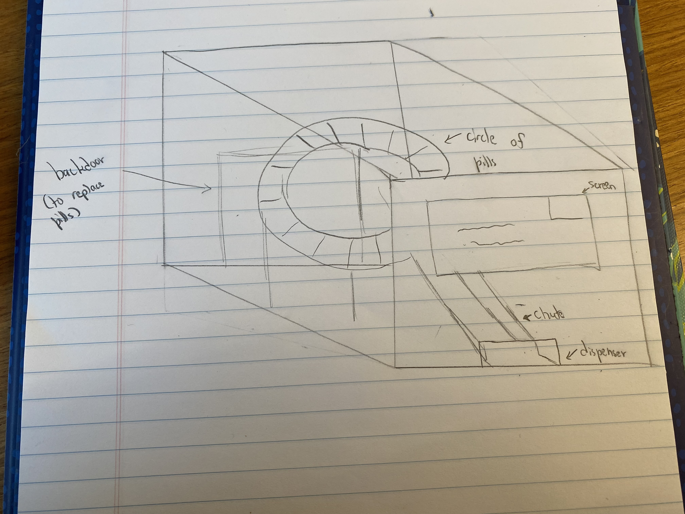
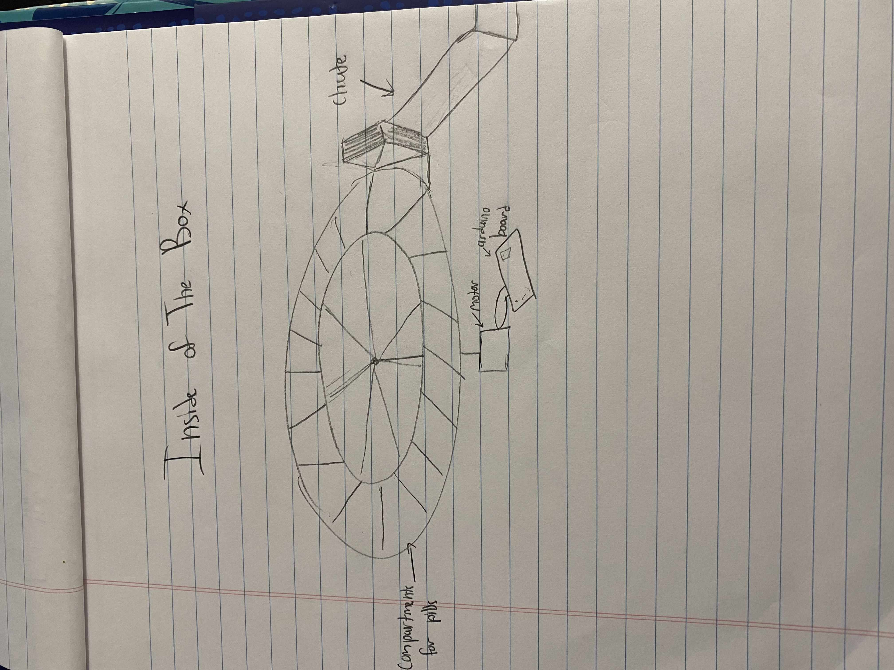
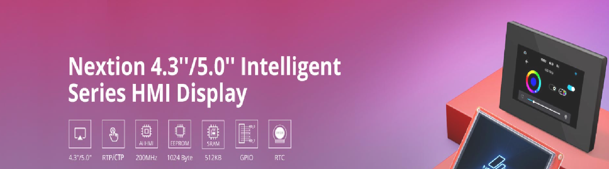
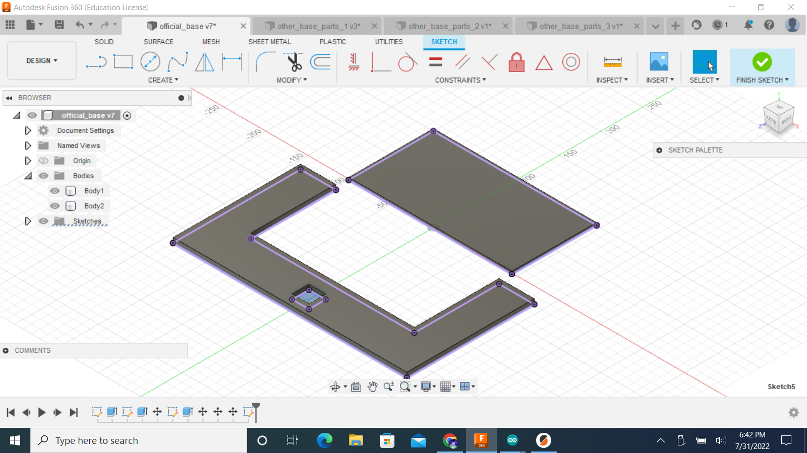
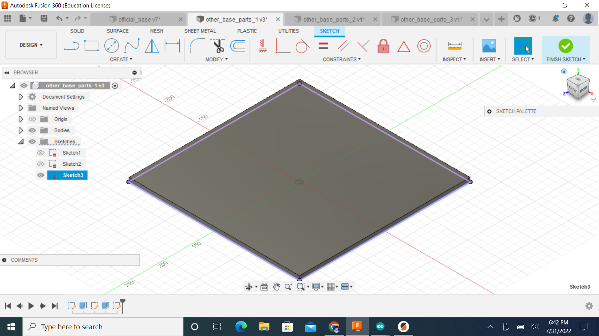
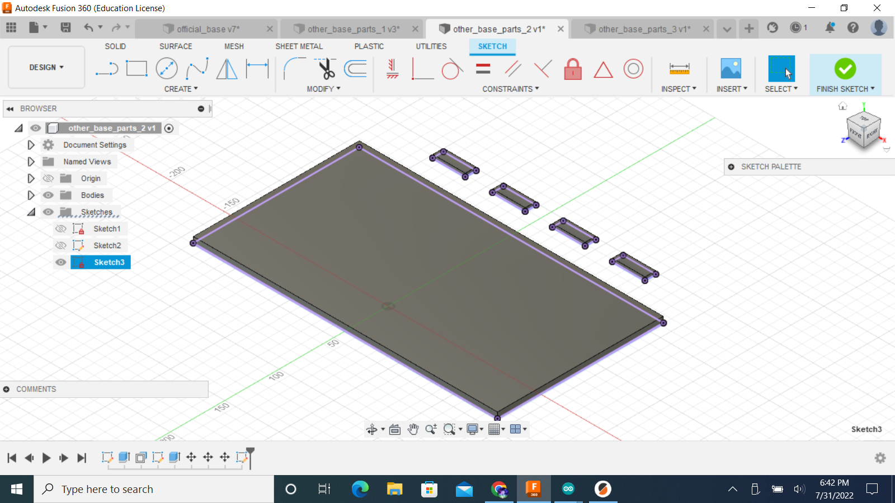
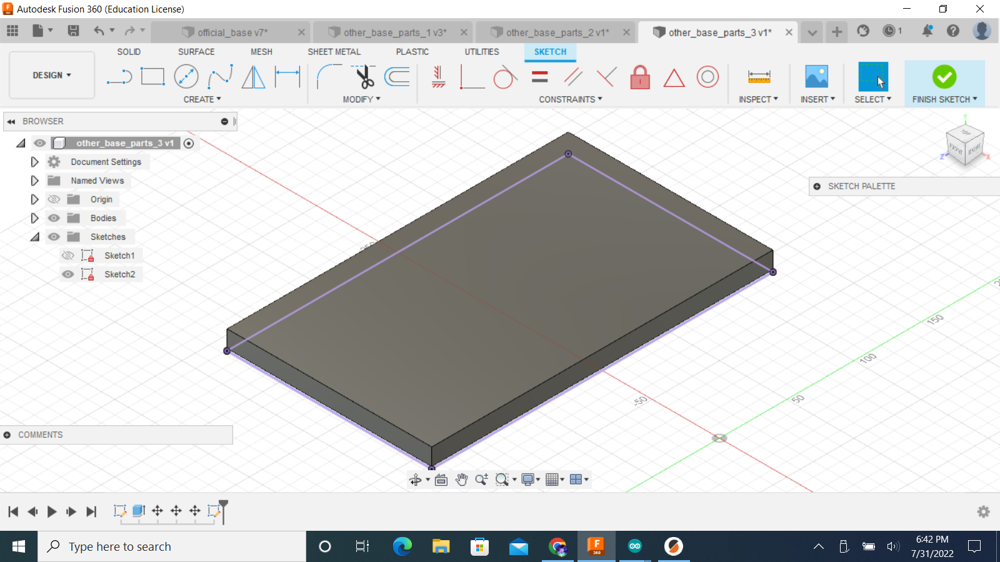

### Final Project
For my final project, I wanted to make something that relates to my future career aspiration, which is a pharmaceutical engineer.
Thus, I decided to make an automatic pill dispenser that makes it easier for people with mental illnesses to take their daily medication.
A lot of the automatic pill dispensers that have been created usually say that they are targeted towards those with alzehimer's or dementia.
However, I don't think they take into account the mental health community as a whole, like for those who are diagnosed young, so they get careless with the routine of taking medicine.
It can be hard to track a child's intake of their medication if they have a parent, parent's, or guardian who works a lot and can't be there to watch them take it. Also, school nurses themselves can be forgetful because they're taking care of a whole school too.
So, my final project is directed towards children with mental illnesses, or physcial illnesses, that can rely fully on this machine, and make it easier for their caretakers.
These are my first sketches of what shape it will be, and the inside of it.


With this screen, I will be able to make this machine more simple for kids to have safe access and a routine.

However, this screen was not able to be bought, because by the time it was the week for making final projects, it wasn't even ordered yet. So I decided that, with the help of my friend Riley who is also in the class, I could use her mini ipad as a substitute to control the pill wheel wirelessly. I also changed the motor I wanted to use, using a stepper motor instead because it's functions went along a lot better with what I was planning on making.
I made the CAD designs in Fusion 360 for the base of the box surrounding the pill wheel, which include the front, back, bottom, top, and sides.



